Aniki Video Center
A controller-friendly local media center built directly into Aniki ReMake. Browse folders with no setup, or build a complete Movies / TV Shows / Anime library with artwork, rich detail pages, progress tracking, favorites and fullscreen playback.

images/aniki-video-center-hero-overview.pngSee what Video Center looks like
Before configuring anything, here are the main views you are building toward.
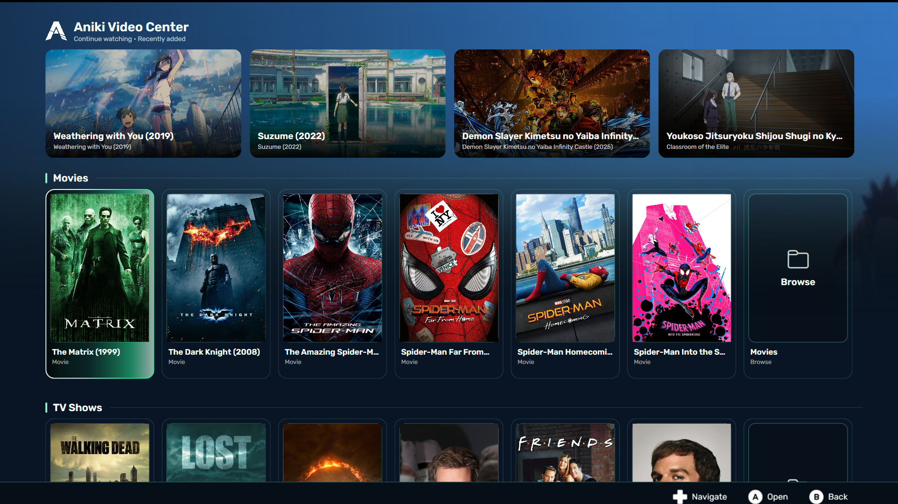
images/aniki-video-center-showcase-home.png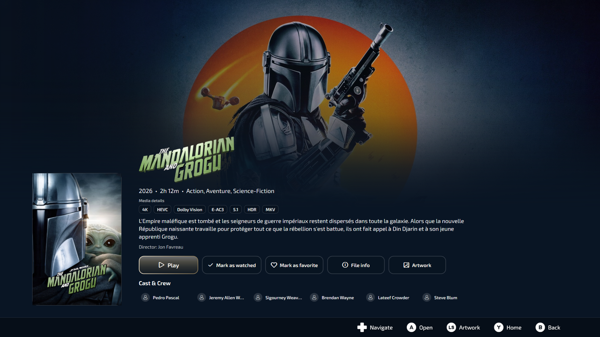
images/aniki-video-center-showcase-movie.png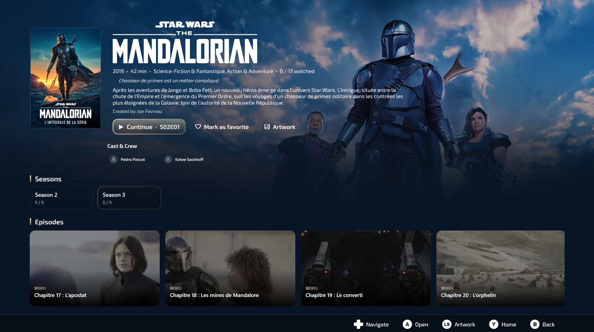
images/aniki-video-center-showcase-series.png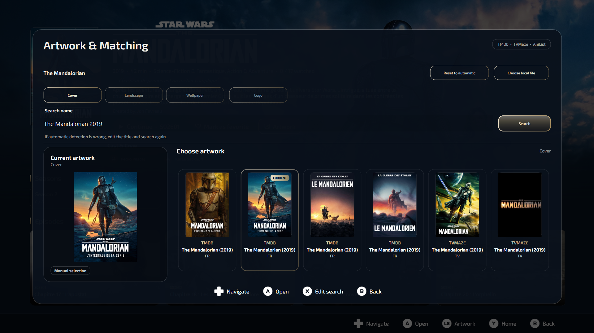
images/aniki-video-center-showcase-artwork.pngQuick start
You do not need to configure everything before trying Video Center.
Browse only
The fastest way to start.
- Open Fullscreen.
- Open Start / Menu → Extras → Aniki Video Center.
- Select Browse.
- Open a folder and play a video.
Recommended full setup
For the complete media-center experience.
- Configure your libraries.
- Set FFmpeg and FFprobe.
- Choose playback preferences.
- Configure artwork providers.
- Run the first library scans.
If you only want a clean controller-friendly folder browser and player, Browse is enough. The library, artwork and metadata features are optional.
Open Video Center
- Open Playnite in Fullscreen.
- Press Start / Menu.
- Open Extras.
- Select Aniki Video Center.
You can also expose Video Center through the Hub when the corresponding Hub option is enabled.
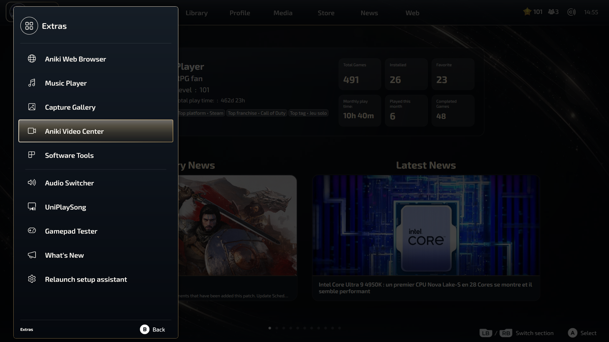
images/aniki-video-center-open-from-extras.pngOpen Video Center settings
The complete configuration is in Playnite Desktop.
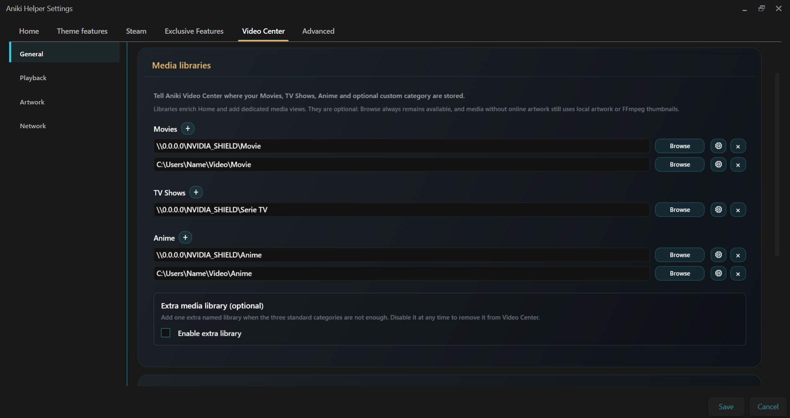
images/aniki-video-center-settings-general.pngChoose your setup
Browse only
Use this if you want Video Center to behave like a couch-friendly file browser. No Movies / TV Shows / Anime library is required.
- Browse local drives and folders.
- Open configured network locations.
- Favorite folders for faster access.
- Play supported video files directly.
- Resume partially watched videos.

images/aniki-video-center-browse-view.pngFull library mode
Configure libraries when you want the richer Home, dedicated detail pages, metadata, artwork, watched state and favorites.
| Library | Typical use | Detail behavior |
|---|---|---|
| Movies | Films, documentaries or other standalone media | Movie-style detail page |
| TV Shows | Series and docuseries | Series view with seasons/episodes |
| Anime | Anime series and anime movies | Series or movie view depending on the detected media |
| Custom | An optional fourth category with your own visible name | You choose whether it behaves like Movies, TV Shows or Anime |
Configure media libraries
Open Aniki Helper → Video Center → General and find Media libraries.
- Add one or more folders under Movies.
- Add one or more folders under TV Shows.
- Add one or more folders under Anime.
- Enable the optional extra library only if you need a fourth category.
- Save your settings.
You do not need to configure every category. If you only have Movies, configure Movies and leave the others empty.
Custom / extra library
The optional fourth library exists for collections that do not fit your three main categories.
Example uses:
- Documentaries
- Concerts
- Cartoons
- K-Dramas
- Manga Movies
You choose both the name shown in Video Center and how the category should behave internally.
Name it Documentaries and set its behavior to Movies. The Fullscreen tab will say “Documentaries”, but items will use movie-style matching and detail pages.

images/aniki-video-center-settings-libraries.pngConfigure FFmpeg and FFprobe
Video Center can play media without them, but these tools are strongly recommended.
| Tool | Used for |
|---|---|
| FFmpeg | Generate thumbnails and visual previews from video files. |
| FFprobe | Read duration, codecs and chapter information used by media details and chapter-based playback features. |
Reuse an existing FFmpeg installation
If you already configured FFmpeg for another Playnite extension, you can reuse the same ffmpeg.exe and ffprobe.exe.
Install FFmpeg
- Download a Windows FFmpeg build from Gyan.dev.
- Download the release essentials ZIP.
- Extract it to a permanent location, for example
C:\AnikiTools\FFmpeg\. - Open the extracted
binfolder. - Confirm
ffmpeg.exeandffprobe.exeare present.
Set the paths
- Open Video Center → General.
- Browse to
ffmpeg.exe. - Browse to
ffprobe.exeif it is not detected automatically. - Confirm the status shows that the tools are ready.
Do not move or delete the FFmpeg folder after configuring it. If you generated thumbnails before FFmpeg was configured, run the thumbnail scan again afterward.
Configure playback
Open Video Center → Playback.
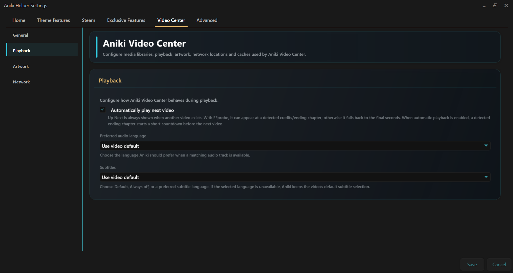
images/aniki-video-center-settings-playback.pngAutomatically play next video
Enable it if you want the next episode/video to start automatically after the Up Next prompt. Disable it if you prefer to confirm manually.
Preferred audio language
Choose the language Video Center should prefer when a matching audio track exists. If there is no match, the normal/default audio selection is used.
Subtitles
Choose the behavior that suits you: use the video's default, always turn subtitles off, or prefer a selected language when available.
Configure artwork and metadata
Open Video Center → Artwork. Local artwork is preferred when available; online providers can fill what is missing.
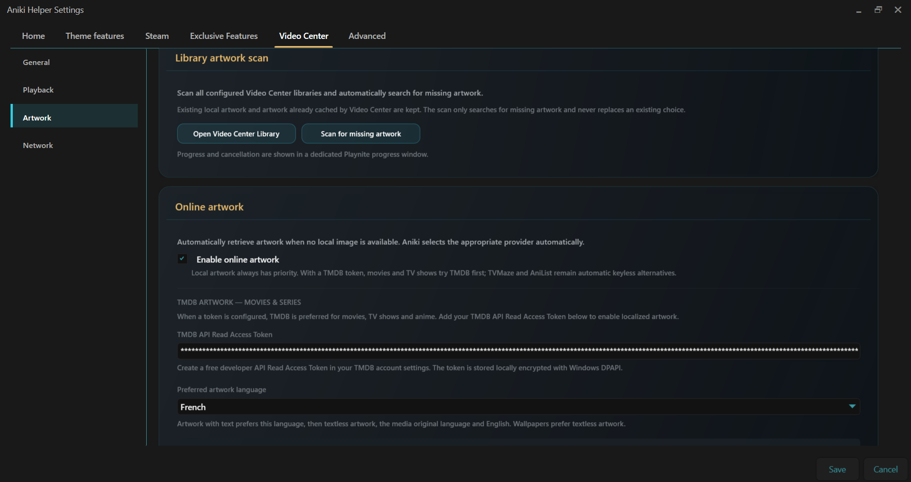
images/aniki-video-center-settings-artwork.pngMovies — TMDb
Movie matching and artwork use TMDb. You need your own free API Read Access Token.
- Create/sign in to your TMDb account.
- Open the API section of your TMDb account settings.
- Follow TMDb's API registration steps.
- Copy the complete API Read Access Token.
- Paste it into Aniki Helper → Video Center → Artwork.
- Save.
Useful links: TMDb API Getting Started · TMDb API settings.
TV Shows and Anime
- TV Shows: TVMaze does not require an API key.
- Anime: AniList does not require an API key.
Artwork types
| Artwork | Where it is used |
|---|---|
| Cover | Poster/vertical library cards and detail artwork. |
| Landscape | 16:9 Home, Hub and media cards. |
| Wallpaper | Large hero/detail backgrounds. |
| Logo | Transparent media logo used in premium Hero/detail layouts when available. |
Add NAS or network locations
Open Video Center → Network to add friendly shortcuts to network locations.
- Enter a friendly name.
- Enter the UNC path, for example
\\NAS\Movies. - Make sure the same path already works in Windows File Explorer.
- Save.
Aniki Helper does not manage Windows network credentials. Windows must already have permission to access the share.
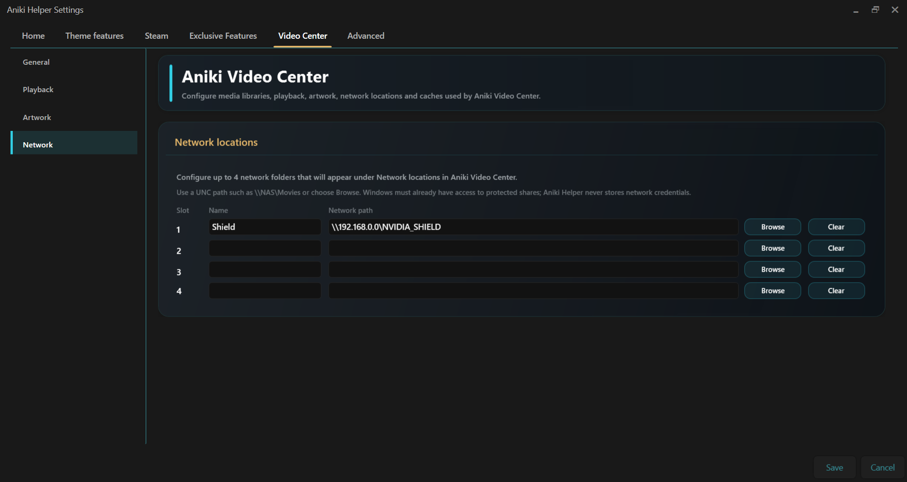
images/aniki-video-center-settings-network.pngUnderstand the Home page
The Home page is designed to give you useful media immediately without forcing you to browse your folder tree.
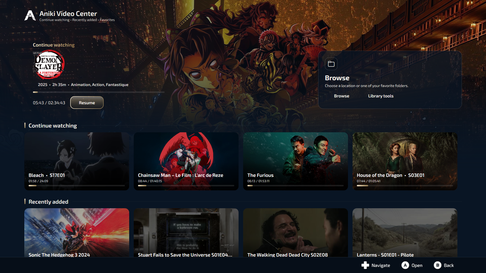
images/aniki-video-center-home-view.pngHero
The Hero prioritizes a media item that you started but did not finish. If nothing is currently in progress, it falls back to a recent addition so the Hero never feels empty.
Continue Watching
Shows partially watched videos with saved progress. Resume from the Hero or from the row below.
Recently Added
Shows recent media detected in your configured libraries.
Favorites
Media you mark as favorite can appear in the Favorites row. Favorites are separate from favorite Browse folders.
Browse and Library Tools
Browse opens the folder explorer. Library tools opens maintenance actions such as missing thumbnail/artwork scans.
Video Center in the Hub
If Show Aniki Video Center page in the Hub is enabled, the Hub can surface recent Video Center activity without opening the full app first.
The page uses up to four 16:9 cards built from Recently watched and Recently added media, with fallbacks when one group does not have enough items. Selecting a card opens Video Center directly on that media's detail page.
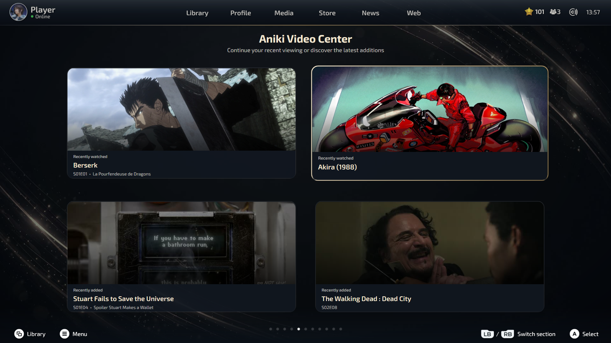
images/aniki-video-center-hub-page.pngMovie detail view
Standalone films use the premium Movie detail page.
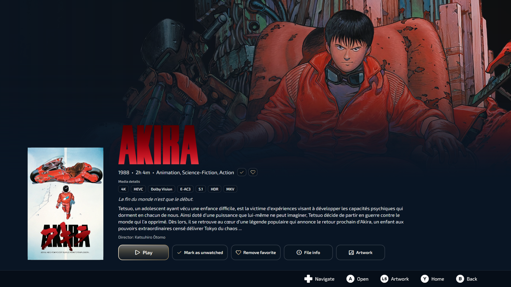
images/aniki-video-center-movie-detail.pngDepending on the available metadata and media file, the page can show:
- poster and wallpaper;
- transparent logo or title fallback;
- year, runtime, genres and rating;
- tagline and synopsis;
- director / cast information;
- technical chips such as resolution, codec, HDR, audio format and container;
- play/resume, watched, favorite, file info and Artwork actions.
Watched and favorite states also have visual indicators on the detail page so you do not have to infer the state only from the button text.
Series & Anime detail view
Episodic media uses the Series/Anime layout with seasons and episode cards.
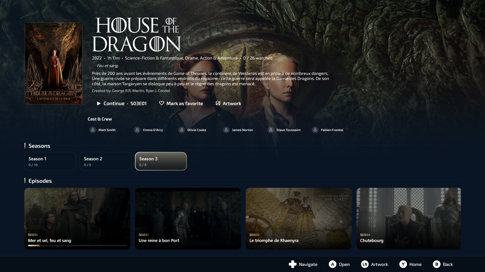
images/aniki-video-center-series-detail.pngSingle files and loose episodes
Video Center tries to adapt to mixed libraries:
- A true standalone file inside TV Shows or Anime can use the Movie detail view.
- Files using recognizable episode naming such as
S01E03can be grouped with other episodes of the same show even when they are loose in the library root. - Virtual series grouping lets a show behave like a normal series even when the physical folder structure is imperfect.
Clean folder/file names still give the best results. Automatic grouping is a convenience, not a reason to deliberately use unreadable filenames.
Watched and favorite status
Use the actions on Movie/Series detail pages to manage your personal state.
- Mark as watched / unwatched updates the media state and watched indicators.
- Mark as favorite / remove favorite updates the favorite state and Home Favorites row.
- Episode cards can display watched checks when episodes are completed.
- A series can be considered watched when all of its episodes are watched.
Artwork & Matching
Use the Artwork Manager when automatic identification is wrong or you simply want another visual.
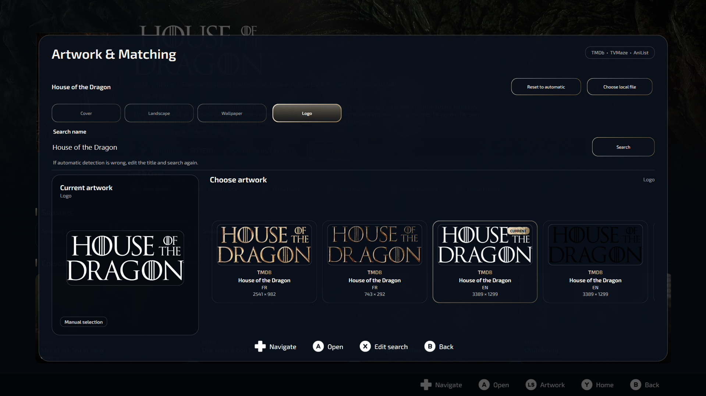
images/aniki-video-center-artwork-manager.pngFix a wrong match
- Open the media's Artwork action.
- Choose Change match / identify mode.
- Edit the search title if necessary.
- Select the correct result.
- Return to Cover / Landscape / Wallpaper / Logo and choose the visuals you want.
Use a local image
You can choose a local file instead of an online result. You can also reset an asset back to automatic behavior later.
Library Tools
Open Library tools from the Home Browse card when you want to maintain your media library.
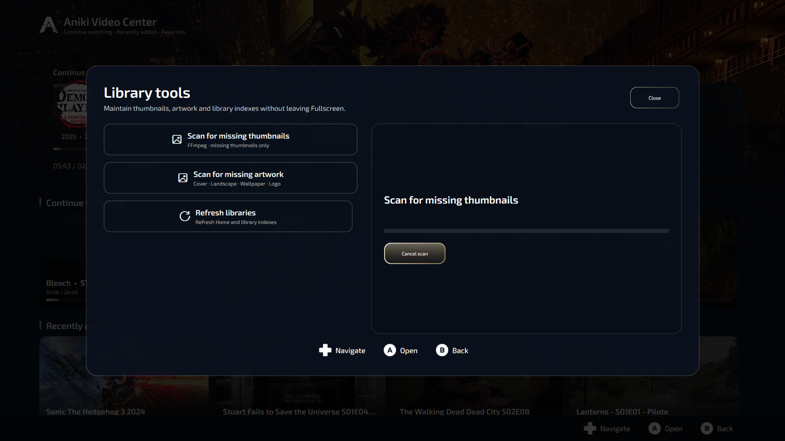
images/aniki-video-center-library-tools.pngTypical maintenance actions include:
- scan missing thumbnails;
- scan missing artwork;
- refresh/update library visuals after adding large amounts of media.
Artwork scanning can discover Cover, Landscape, Wallpaper and Logo assets. A missing Logo does not make a media item incomplete by itself.
Player controls
The player exposes the controller controls directly on screen. Common actions include navigation, play/pause, seeking, audio/subtitle selection, chapters, aspect ratio, playback speed and technical media information.
Use the control hints displayed by your current player interface as the source of truth for exact button mappings.
Resume playback
When saved progress exists, Video Center can offer Resume or starting again from the beginning. Partially watched media feeds Continue Watching and the Home Hero.
Recommended folder organization
Video Center is intentionally tolerant, but clean naming improves matching and makes troubleshooting much easier.
Movies
D:\Videos\Movies\Akira (1988)\Akira (1988).mkv
D:\Videos\Movies\The Matrix (1999)\The Matrix (1999).mkv
D:\Videos\Movies\Drive (2011).mkvTV Shows
D:\Videos\TV Shows\Silo\Season 1\Silo.S01E01.mkv
D:\Videos\TV Shows\Silo\Season 1\Silo.S01E02.mkv
D:\Videos\TV Shows\The Walking Dead Dead City\Season 2\The.Walking.Dead.Dead.City.S02E01.mkvAnime
D:\Videos\Anime\Bleach\Bleach - S17E01.mkv
D:\Videos\Anime\Demon Slayer\Season 1\Demon.Slayer.S01E01.mkv
D:\Videos\Anime\Akira (1988)\Akira (1988).mkvAfter your first setup
Once your folders and tools are configured:
- Open Video Center once and confirm your libraries are visible.
- Open Library tools.
- Run the missing thumbnail scan if needed.
- Run the missing artwork scan if online artwork is configured.
- Open a few Movie and Series pages to confirm matching is correct.
- Fix incorrect matches from Artwork & Matching rather than renaming everything immediately.
Troubleshooting
I do not see thumbnails
Check the FFmpeg path/status, then run the missing thumbnail scan again.
Movie artwork does not download
Check your TMDb API Read Access Token and online artwork settings. If the media is matched incorrectly, use Artwork & Matching to choose the correct result.
TV or Anime artwork does not download
Check internet access and provider status. TVMaze and AniList do not require your own API key.
My NAS/network folder does not open
Test the same UNC path in Windows File Explorer first. Video Center relies on Windows already having access to the share.
Wrong title or artwork
Open Artwork, change the match/search title and select the correct result. Manual matches are kept for that media.
An episode opens like a Movie
Check the filename. Episode grouping relies on recognizable series/episode information such as S01E03. A genuine single standalone video can intentionally use the Movie view.
I no longer want the Custom library
Disable the optional extra library in Video Center General settings. It should disappear from Fullscreen instead of leaving an empty permanent category.
Should I clear the caches regularly?
No. Caches exist to keep Video Center fast. Clear/rebuild only when a cache is clearly wrong, you changed tools/settings, or you intentionally replaced artwork/thumbnails.
Final setup checklist
| Step | Required? |
|---|---|
| Open Video Center and test Browse | Yes |
| Configure Movies / TV Shows / Anime folders | Only for library mode |
| Configure optional Custom library | No |
| Configure FFmpeg | Recommended |
| Configure FFprobe | Recommended |
| Choose audio/subtitle behavior | Optional |
| Add TMDb token | Only for automatic Movie artwork |
| Add NAS/network shortcuts | Only if needed |
| Run thumbnail/artwork scans | Recommended after first full setup |
Start with what you need. Video Center works as a simple browser first, and you can progressively add libraries, artwork and metadata later.